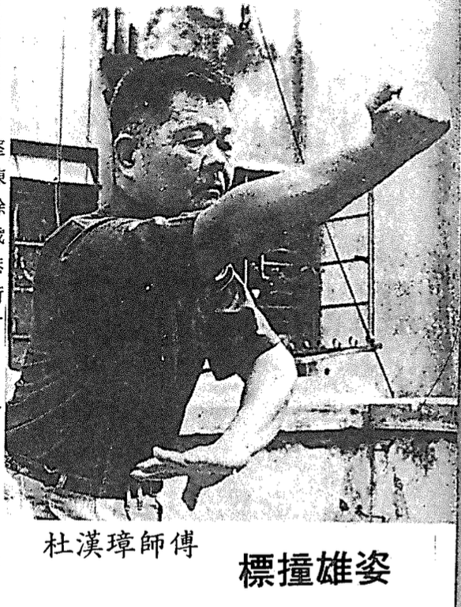
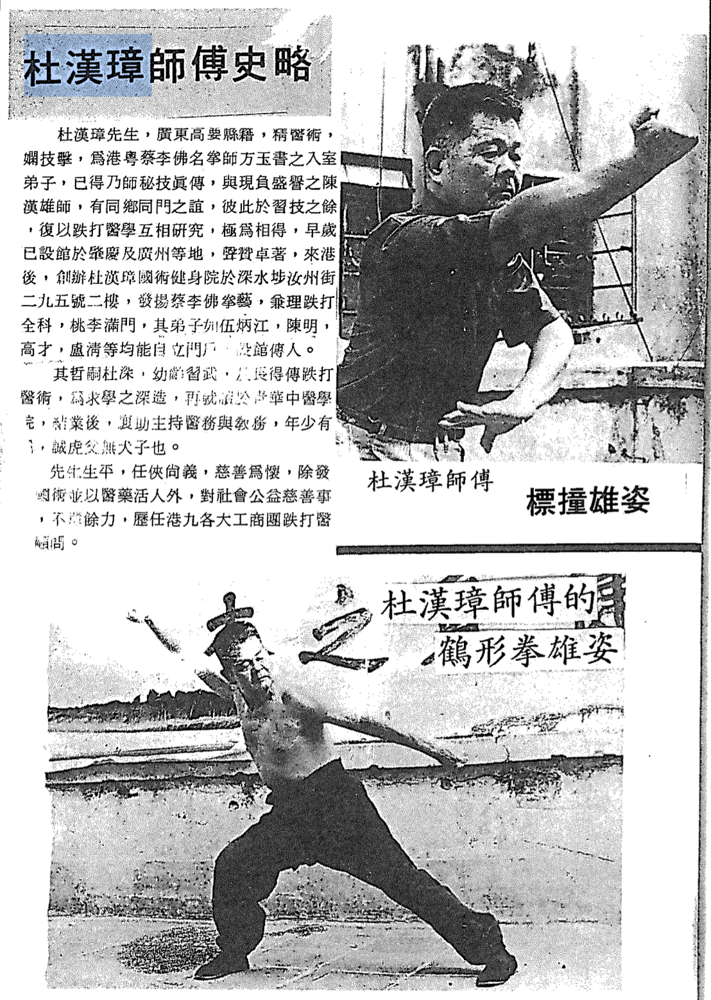

Written by Chu Shiu Ki, 1970s Choy Lee Fut Magazine, Volume 1
Translated by Sifu Angus on July 2025
Mr. To Hon Cheung, originally from Gaoyao County in Guangdong Province, was highly skilled in both medicine and martial arts. He was a formal disciple of the renowned Choy Lee Fut master, Fong Yuk Shu (方玉書), in Hong Kong (香港) and Guangdong（廣東）. Having received the complete and authentic transmission of his master's secret techniques, he shared close ties with Master Chan Hon Hung, who was both a fellow townsman and martial brother. Together, they not only trained in martial arts but also collaborated closely in the study and advancement of Chinese traumatology (Dit Da medicine), forming a deep mutual respect and bond.

Grandmaster To Hon CheungIn his early years, Master To established martial arts schools in Qingyuan and Guangzhou, gaining a strong reputation for his martial and medical expertise. After moving to Hong Kong, he founded the To Hon Cheung Martial Arts and Health Institute at 295 Yu Chau Street, 2nd Floor, Sham Shui Po. There, he dedicated himself to promoting the Choy Li Fut martial art and practicing comprehensive Chinese medicine, especially in traumatology. Many of his students—including Chu Shiu Ki (朱兆基), Ng Bing Keung, Chan Ming, Ko Choi, and Lo Ching—went on to establish their own schools and pass on his teachings.
His son, To Sam （杜深）, began training in martial arts at a young age and also inherited his father's medical knowledge. In pursuit of deeper learning, he furthered his studies at Tsinghua University's School of Traditional Chinese Medicine. Upon graduation, he assisted in managing both the medical practice and martial arts instruction. Despite his youth, he has proven himself to be a capable successor—truly a "tiger father begets no weak son."
Throughout his life, Master To was known for his chivalrous spirit, strong sense of justice, and charitable heart. Beyond promoting traditional martial arts and using medicine to heal the public, he was actively involved in social welfare and charitable endeavors. He served as a medical consultant for traumatology across numerous major industrial and commercial associations in Hong Kong and Kowloon.

Master To Hon Cheung – Biography - Choy Lee Fut Magazine, Volume 1📸 Follow us on Instagram for more updates!